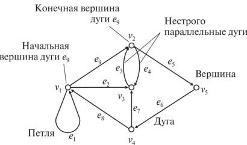
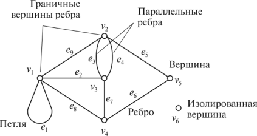
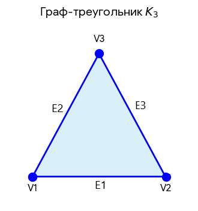

Урок 8. Основы теории графов
Теория графов — раздел дискретной математики, изучающий свойства структур, состоящих из вершин и связей между ними. Графы используются для моделирования транспортных сетей, социальных связей, интернета, электрических цепей и многих других систем.
1. Основные понятия
Граф — это совокупность двух множеств: множества вершин (узлов) и множества рёбер (связей), соединяющих пары вершин. Обозначают граф обычно как G = (V, E), где V — вершины, E — рёбра.
- Смежные вершины — вершины, соединённые ребром.
- Взвешенный граф — каждому ребру приписан вес (число). Вес может означать длину, стоимость, пропускную способность и т.п.
- Цикл — путь, у которого начало и конец совпадают, а все остальные вершины различны (простой цикл).
- Связный граф — любые две вершины соединены хотя бы одним путём. Если граф не связный, он распадается на компоненты связности.
- Дерево — связный граф без циклов. В дереве число рёбер на 1 меньше числа вершин.
2. Виды графов
- Ориентированный граф (орграф) — граф, имеющий ориентированные (заданы направления) дуги (ребра). Путь (в ориентированном графе) — это последовательность дуг, в которой конечная вершина всякой дуги, отличной от последней, является начальной вершиной следующей.
- Неориентированный граф — граф, ребра которого не имеют направления. Степень вершины (в неориентированном графе) — количество рёбер, инцидентных вершине. В орграфе различают полустепень исхода (число выходящих дуг) и полустепень захода (число входящих дуг).


3. Способы представления графа
Для обработки графа на компьютере используют различные структуры данных. Приведем примеры на примере графа-треугольника:

Это простейший цикл, состоящий из 3 вершин и 3 ребер. Он является полным неориентированным графом с тремя вершинами.
3.1. Матрица смежности
Это матрица n×n где n - число вершин, где bij = 1, если существует ребро, идущее из вершины x в вершину y и bij = 0 в противном случае.
| V1 | V2 | V3 | |
|---|---|---|---|
| V1 | 0 | 1 | 1 |
| V2 | 1 | 0 | 1 |
| V3 | 1 | 1 | 0 |
3.2. Матрица инцидентности
Это матрица А с n строками, соответствующими вершинам, и m столбами, соответствующего рѐбрам. Для ориентированного графа столбец, соответствующий дуге (x,y) содержит - 1 в строке, соответствующей вершине x и 1, в строке, соответствующей вершине у. Во всех остальных 0. Петлю, т.е. дугу (x,x) можно представлять иным значением в строке x, например, 2. Если граф неориентированный, то столбец, соответствующий ребру (x,y) содержит 1, соответствующие x и y и нули во всех остальных строках.
| E1 | E2 | E3 | |
|---|---|---|---|
| V1 | 1 | 1 | 0 |
| V2 | 1 | 0 | 1 |
| V3 | 0 | 1 | 1 |
3.3. Список смежности
Для каждой вершины хранится список смежных с ней вершин (и веса, если граф взвешенный). Это экономит память для разреженных графов.
| 1 | 2 | 3 |
|---|---|---|
| 2 | 1 | 3 |
| 3 | 1 | 2 |
4. Пример построения графа и его представлений
Задача: В соревнованиях участвуют 5 команд: A, B, C, D, E. Известны результаты встреч: A выиграла у B и C; B выиграла у C и D; C выиграла у D; D выиграла у E; E выиграла у A и B. Постройте ориентированный граф (дуга от победителя к проигравшему) и его матрицу смежности.
Решение: Вершины: A, B, C, D, E. Дуги: A→B, A→C, B→C, B→D, C→D, D→E, E→A, E→B. Матрица смежности (порядок вершин A,B,C,D,E):
| A | B | C | D | E | |
|---|---|---|---|---|---|
| A | 0 | 1 | 1 | 0 | 0 |
| B | 0 | 0 | 1 | 1 | 0 |
| C | 0 | 0 | 0 | 1 | 0 |
| D | 0 | 0 | 0 | 0 | 1 |
| E | 1 | 1 | 0 | 0 | 0 |
5. Обход графа
Обход графа — это систематический просмотр всех вершин и рёбер. Два основных алгоритма:
- Поиск в глубину (DFS — Depth-First Search): идём «вглубь» от текущей вершины, пока есть непосещённые смежные, затем возвращаемся. Использует стек (рекурсию).
- Поиск в ширину (BFS — Breadth-First Search): сначала посещаем все соседние вершины, затем их соседей и т.д. Использует очередь.
Обходы применяются для проверки связности, поиска компонент, построения остовных деревьев и в алгоритмах поиска путей (см. урок 9).
6. Применение графов
- Транспортные сети и логистика (поиск кратчайших маршрутов).
- Социальные сети (анализ связей, рекомендации друзей).
- Компьютерные сети (маршрутизация, топология).
- Электрические схемы (анализ цепей).
- Теория расписаний и распределения ресурсов.